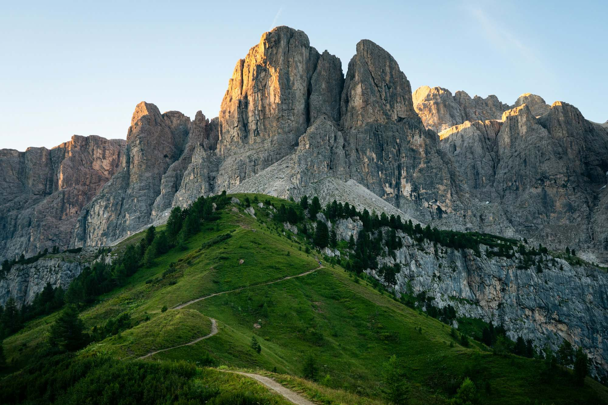
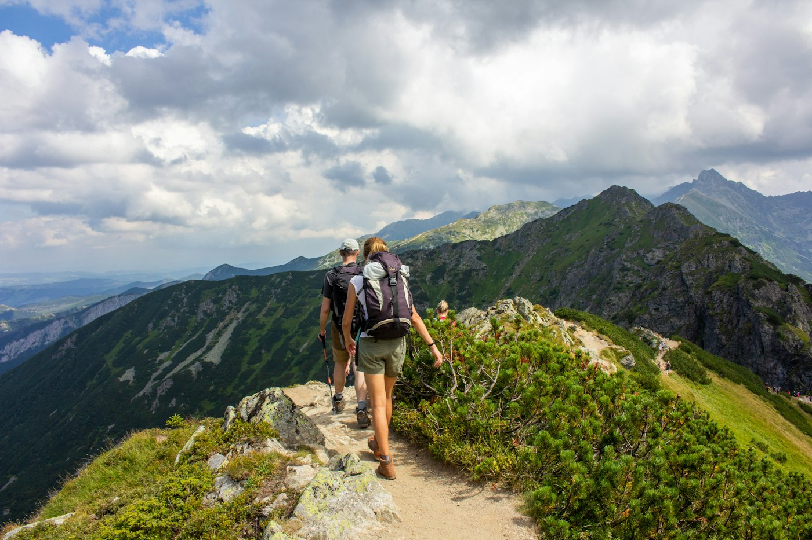
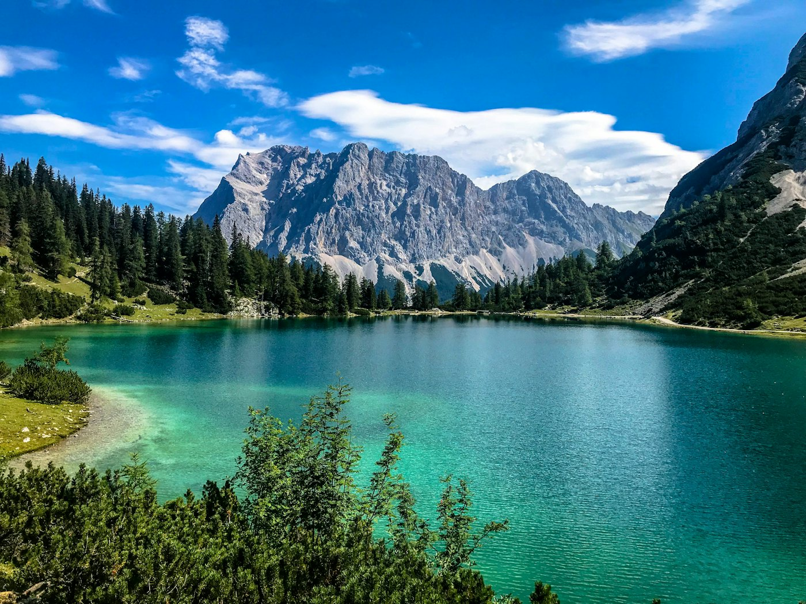

Altaquota
Escursioni guidate in Dolomiti e sul Garda. Dieci persone al massimo, al passo di chi va più piano.
Vedi le prossime partenzePartenzaFrontali accese. Il prato è ancora gelato.
La forcellaIl primo sole. Tè dal thermos, dieci minuti.
La cimaPer un po' nessuno parla. Poi escono i panini.
1.540metri di quota
0,0km di 9,6
Prossime partenze
I posti si aggiornano a ogni prenotazione. Quando un'uscita è piena, si apre da sola la lista d'attesa.

Si parte al buio, così il sole ci trova già in alto.

In cresta ognuno tiene il suo passo. La guida chiude la fila.

In discesa ci si ferma al lago. Chi vuole si toglie gli scarponi.
Chi vi accompagna
- Guide abilitate
- Accompagnatori di media montagna iscritti al collegio regionale, assicurati, formati al primo soccorso.
- Dieci persone, non una di più
- Gruppi piccoli: si aspetta chiunque e nessuno cammina da solo.
- In italiano e in inglese
- Ogni uscita si fa in due lingue, quando serve.
- Se il meteo cambia
- Si decide la sera prima. Se annulliamo, scegliete un'altra data o riavete i soldi.